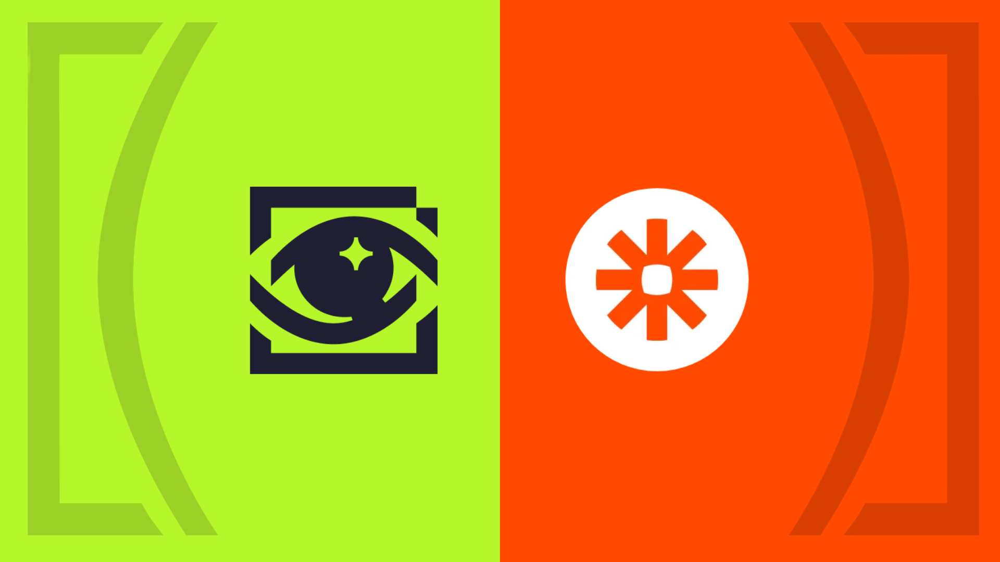

Questbook is an unopinionated multisig safe for allocating funds to builders. Protocols like Polygon, Solana, Celo, Aave etc. use Questbook to run their grants/bounty programs.
Questbook is completely decentralized. We don’t own any proprietary data or run centralized servers. Even the data is either on-chain or stored on IPFS/Filecoin and delivered via Graph protocol.
Questbook itself has been built composing on various other protocols that came before us. Today, we pay it forward. Today, we’re announcing the private beta of a Zapier Integration.
Questbook doesn’t aim to solve all the problems. We focus on making sure that you are able to allocate funds from your treasury to builders in a seamless manner. However, you may have personal or corporate preferences on the specific processes you want to follow.
We’ve long maintained that since all the data is open and on-chain, anyone can build applications and customizations on top of Questbook contracts. However, with this Zapier integration we make that data and events available to you on an easy to use dashboard, that you can connect with thousands of other applications already available on zapier.
Triggers include
- A new grant/bounty is created
- A builder applied
- A review was submitted
- A payout was made
- And, many more …
You can see the full sourcecode at https://github.com/questbook/qb-api
Some usecases
- Create automations for financial auditing
- Notify the right people when a builder applies for a grant
- Update a google sheet for archiving and record keeping
- Create dashboards on HubSpot for org-wide visibility